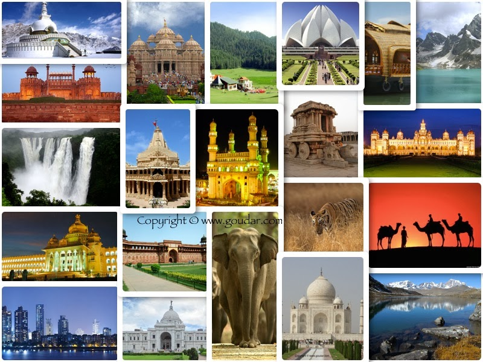
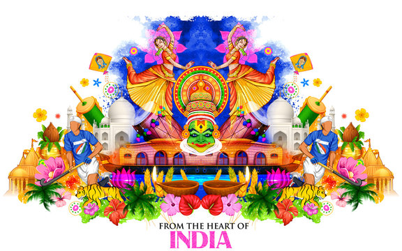
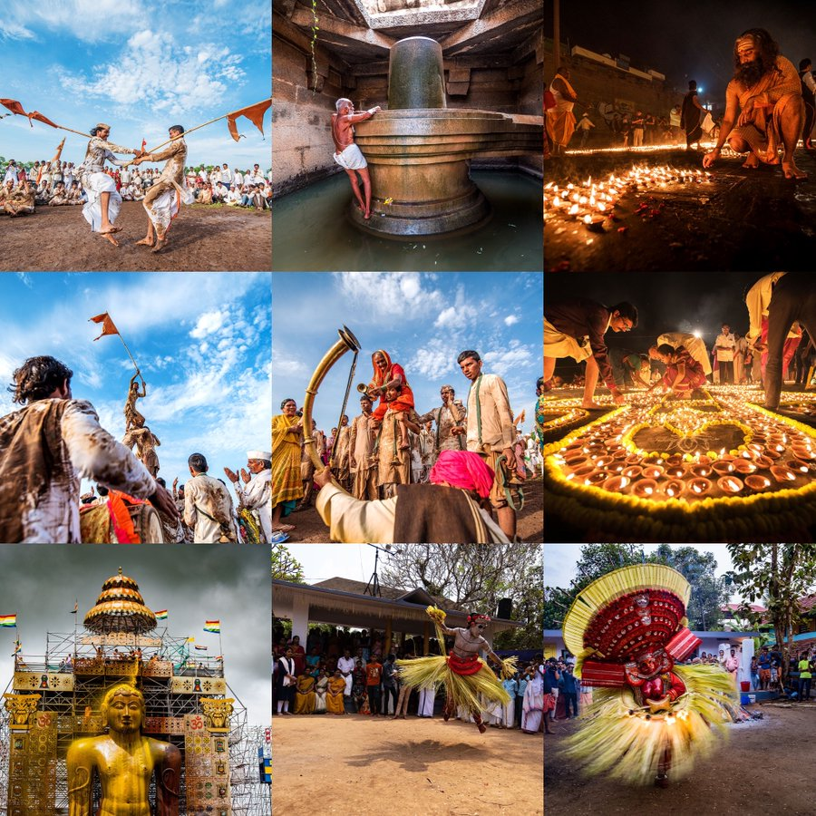
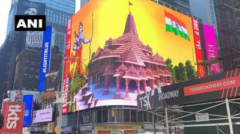
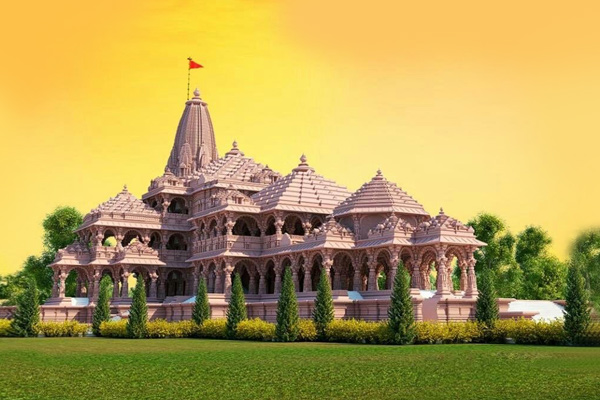
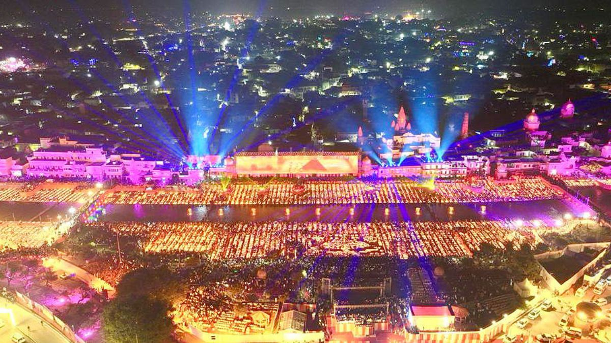

Namaste welcome to India!!
ABOUT THIS PLACE...
India is one of the oldest civilizations in the world with a kaleidoscopic
variety and rich cultural heritage. It has achieved all-round
socio-economic progress since its Independence. India has become
self-sufficient in agricultural production and is now one of the top
industrialised countries in the world and one of the few nations to have
gone into outer space to conquer nature for the benefit of the people. It
covers an area of 32,87,263 sq. km (1,269,346 sq mi), extending from the
snow-covered Himalayan heights to the tropical rain forests of the
south.
As the 7th largest country in the world, India stands apart from the rest
of Asia, marked off as it is by mountains and the sea, which give the
country a distinct geographical entity. Bounded by the Great Himalayas in
the north, it stretches southwards and at the Tropic of Cancer, tapers off
into the Indian Ocean between the Bay of Bengal on the east and the
Arabian Sea on the west. Lying entirely in the northern hemisphere, the
mainland extends between latitudes 8° 4' and 37° 6' north, longitudes 68°
7' and 97° 25' east and measures about 3,214 km from north to south
between the extreme latitudes and about 2,933 km from east to west between
the extreme longitudes. It has a land frontier of about 15,200 km. The
total length of the coastline of the mainland, Lakshadweep Islands and
Andaman & Nicobar Islands is 7,516.6 km.
India is one of the oldest civilizations in the world with a kaleidoscopic
variety and rich cultural heritage. It has achieved all-round
socio-economic progress since Independence. As the 7th largest country in
the world, India stands apart from the rest of Asia, marked off as it is
by mountains and the sea, which give the country a distinct geographical
entity. Bounded by the Great Himalayas in the north, it stretches
southwards and at the Tropic of Cancer, tapers off into the Indian Ocean
between the Bay of Bengal on the east and the Arabian Sea on the west.



-------------------------------------------------------------------------------------------------------------------------------------------------------------------------------------------------------------------------------------------------------------------------------------------------------------------------------------------------------------------------------------------
TRENDING NEWS OF THE DAY!!
RAM MANDIR IS ALL SET TO OPEN ON 22nd JANUARY
"THE WORLD AWAITS TO THIS ICONIC MOMENT"
Live Telecast in Times Square
It's a proud moment for Indians!!


